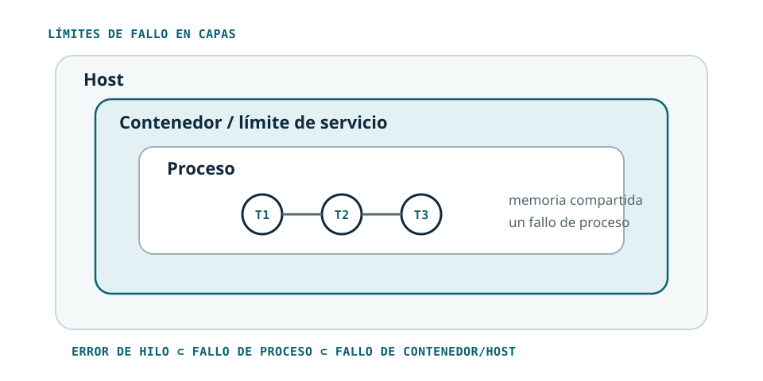

Procesos, virtualización y ejecución distribuida
Pregunta guía: ¿Qué límites de ejecución aíslan estado, planificación, recursos y fallos?
Antes de leer
Sección titulada «Antes de leer»Cuatro contenedores se ejecutan en una misma computadora. ¿Cuántos dominios independientes de fallo de proceso existen? ¿Cuántos dominios independientes de fallo de máquina?
Se guarda solo en este dispositivo. La verás de nuevo al final del capítulo.Escribe primero una respuesta breve. No necesitas acertar todavía: necesitas una predicción que puedas revisar a medida que el capítulo te dé mejores modelos y evidencia.
Usa lo que ya sabes: Procesos, hilos o goroutines, sincronización y memoria virtual vistos en Sistemas Operativos.
Mapa de carga de trabajo
Sección titulada «Mapa de carga de trabajo»Banco de práctica / reto: Las páginas de práctica guiada y comprobación identifican los casos esenciales exactos. Los casos restantes, las extensiones opcionales y las referencias avanzadas no forman parte de la carga esencial salvo que el profesor los asigne.
SIN CONEXIÓNDescargar lección + práctica + laboratorio para estudio sin conexión (.zip · 64 KB)
Por qué importa este capítulo
Sección titulada «Por qué importa este capítulo»Con frecuencia se culpa a la red de un fallo cuyo primer origen está dentro de un solo nodo.
Un proceso de servicio puede contener muchos handlers concurrentes, temporizadores, bucles de fondo, colas, cachés, pools de conexiones, workers de reintento y caminos de apagado. Todas esas actividades comparten memoria y recursos antes de que empiece cualquier coordinación distribuida.
Pregunta guía:
¿Qué puede salir mal dentro de un nodo antes incluso de que intervenga la red?
Este capítulo conecta Sistemas Operativos con ingeniería de servicios distribuidos. La reparación de una carrera local no es la reparación de una carrera distribuida.
Un mutex puede coordinar goroutines de un proceso. No puede hacer que dos máquinas que fallan independientemente estén de acuerdo.
1. Un nodo distribuido sigue siendo un programa concurrente normal
Sección titulada «1. Un nodo distribuido sigue siendo un programa concurrente normal»Piensa en un servidor RPC:
listener
↓
accept/request loop
├── handler R1
├── handler R2
├── handler R3
├── heartbeat loop
├── cleanup de caché
└── shutdown/recoveryAunque la red sea perfecta, las intercalaciones pueden ser incorrectas:
- dos handlers modifican el mismo mapa;
- una goroutine cierra un canal mientras otra envía;
- shutdown compite con una escritura;
- un worker de reintento duplica una transición;
- una cola crece sin límite;
- un ciclo de locks produce deadlock.
La corrección distribuida depende también de la corrección concurrente local de cada nodo.
2. Concurrencia y paralelismo son distintos
Sección titulada «2. Concurrencia y paralelismo son distintos»Concurrencia: varias actividades progresan en intervalos solapados.
Paralelismo: varias actividades ejecutan literalmente al mismo tiempo en CPU/cores distintos.
Un único core puede ser concurrente:
tiempo CPU →
R1 #### ####
R2 #### ###Un multicore puede ejecutarlas simultáneamente.
Para corrección importan ambos casos: el programa no debe depender de un orden afortunado del scheduler salvo que la sincronización lo establezca.
3. El estado mutable compartido crea obligaciones de orden local
Sección titulada «3. El estado mutable compartido crea obligaciones de orden local»Dos handlers ejecutan:
counter = counter + 1Conceptualmente:
read counter
compute +1
write counterSi ambos leen 10 antes de escribir, ambos pueden escribir 11. El resultado esperado era 12.
Pregunta útil:
¿Qué posiciones de memoria pueden leer o modificar varias actividades concurrentes?
En revisión de código conviene inventariar:
estado propietarios/usuarios
------------------------------------------------
request map handlers + cleanup
worker registry registro + expiración
connection pool todos los RPC salientes
shutdown flag main + signal handler
métricas muchas goroutinesDespués se decide cómo sincronizar.

4. Data race y carrera lógica no son lo mismo
Sección titulada «4. Data race y carrera lógica no son lo mismo»Una data race en Go ocurre cuando accesos concurrentes conflictivos a una variable carecen de la sincronización exigida y al menos uno escribe.
El race detector instrumenta el programa y reporta carreras que realmente aparecieron en las rutas ejecutadas.
Es valioso, pero un programa libre de data races puede seguir teniendo una carrera lógica.
Ejemplo:
if balance >= 10:
withdraw 10Cada lectura/escritura puede estar protegida por mutex y, aun así, el check y el update ocurrir en secciones críticas separadas:
lock
read balance = 10
unlock
... otro handler hace lo mismo ...
lock
write balance = 0
unlockNo hay necesariamente data race, pero el invariante puede romperse.
El race detector encuentra accesos de memoria inseguros importantes; no prueba el invariante de aplicación.
5. Los mutex protegen invariantes locales
Sección titulada «5. Los mutex protegen invariantes locales»Para un mapa local:
lock
lookup/update
unlockpuede establecer:
no hay dos goroutines modificando el mapa simultáneamente.
Es apropiado cuando:
- el estado vive en un proceso;
- todos los accesos siguen la misma disciplina;
- bloquear mientras otra goroutine mantiene el lock es aceptable.
La granularidad importa.
Un único lock global simplifica razonamiento, pero puede destruir concurrencia.
Muchos locks finos pueden aumentar throughput y complejidad de orden.
La regla del curso es preferir la estrategia más simple que cumpla corrección y rendimiento medido.
6. Los canales trasladan sincronización a la estructura de comunicación
Sección titulada «6. Los canales trasladan sincronización a la estructura de comunicación»En Go puede hacerse que una goroutine sea propietaria del estado:
handlers
| comandos
v
state-owner goroutine
|
v
map/stateLos handlers no mutan directamente el mapa.
Esto puede simplificar ownership, pero los canales no eliminan mágicamente:
- deadlock;
- starvation;
- colas sin límite;
- shutdown mal ordenado.
Un canal puede bloquear para siempre si nadie recibe o si se forma un ciclo de espera.
La pregunta sigue siendo: ¿quién posee el estado y qué orden impone la comunicación?
7. Deadlock es espera circular
Sección titulada «7. Deadlock es espera circular»Ejemplo:
G1 tiene A, espera B
G2 tiene B, espera ANinguna progresa.
Estrategias locales:
- orden global de adquisición;
- no mantener locks durante I/O bloqueante;
- reducir locking anidado;
- ownership claro;
- usar timeouts solo como escape/diagnóstico cuando sea semánticamente seguro.
Un timeout puede hacer parecer que el deadlock «se recuperó» sin reparar el orden roto.
8. Starvation es negación injusta de progreso
Sección titulada «8. Starvation es negación injusta de progreso»El proceso puede seguir activo mientras una goroutine o solicitud rara vez obtiene el recurso que necesita.
Ejemplos:
- prioridad alta bloquea indefinidamente trabajo bajo;
- lectores posponen continuamente un escritor;
- jobs largos monopolizan un semáforo;
- el pool siempre favorece una clase.
Starvation es principalmente un problema de vivacidad/fairness, no necesariamente de safety.
9. Las fugas de goroutines son fugas de recursos
Sección titulada «9. Las fugas de goroutines son fugas de recursos»Una goroutine esperando eternamente en canal, timer, RPC o cola puede sobrevivir a la solicitud que la creó.
Una fuga parece pequeña. Miles pueden tumbar el servicio.
Preguntas:
- ¿quién cancela trabajo de fondo?
- ¿quién posee el timer?
- ¿quién cierra el canal?
- ¿un send bloqueado puede observar cancelación?
- ¿shutdown espera a todas las goroutines?
El mismo razonamiento de ownership usado para estado distribuido aplica dentro del proceso.
10. Pools acotados convierten concurrencia en política explícita de recursos
Sección titulada «10. Pools acotados convierten concurrencia en política explícita de recursos»Una goroutine por solicitud puede funcionar a carga baja. Sin límites, el trabajo entrante se convierte en presión de memoria/scheduler.
trabajo entrante
↓
cola acotada
↓
N workersSi llegan solicitudes más rápido de lo que se procesan, el sistema debe escoger:
- bloquear/admitir lentamente;
- rechazar;
- descartar;
- poner en cola hasta un límite;
- priorizar.
Ese es el comienzo del backpressure.
11. Los límites de concurrencia forman parte del contrato de servicio
Sección titulada «11. Los límites de concurrencia forman parte del contrato de servicio»Supón un pool de base de datos con 20 conexiones.
Permitir 1000 handlers que las necesiten no crea 1000 unidades de paralelismo; puede crear 980 goroutines esperando y aumentar latencia/expiraciones.
Conviene limitar cerca del recurso escaso:
- workers CPU-bound cerca de capacidad de CPU;
- storage cerca de capacidad de cola del dispositivo;
- RPC salientes cerca del límite downstream;
- inferencia cerca de capacidad del acelerador.
El límite se mide; no se copia ciegamente de un framework.
12. No mantengas un lock local durante un RPC sin una razón fuerte
Sección titulada «12. No mantengas un lock local durante un RPC sin una razón fuerte»lock estado local
RPC remoto
esperar
unlockLa duración del lock depende ahora de la red y del servicio remoto.
Un peer lento puede bloquear trabajo local no relacionado.
Dos servicios pueden crear ciclo distribuido:
A tiene lock → llama B
B tiene lock → llama AA menudo es mejor capturar/reservar estado, liberar, hacer trabajo remoto y después validar/actualizar.
Eso puede introducir concurrencia optimista; no existe receta universal. Lo importante es reconocer el acoplamiento.
13. Un mutex local no implementa exclusión mutua distribuida
Sección titulada «13. Un mutex local no implementa exclusión mutua distribuida»A y B pueden tener cada uno:
mutex → leader=trueAmbos programas pueden estar libres de data races y discrepar globalmente.
La sincronización de memoria compartida ordena accesos dentro de un dominio. La coordinación distribuida ordena acciones entre dominios de fallo independientes.
Más adelante aparecen elección de líder, consenso, leases y locks distribuidos.
14. Los procesos crean aislamiento de memoria y fallo
Sección titulada «14. Los procesos crean aislamiento de memoria y fallo»Procesos separados no comparten normalmente espacio de direcciones.
Ventajas:
- uno no muta directamente memoria ordinaria del otro;
- crashes pueden ser independientes;
- permisos/recursos pueden diferir;
- comunicación cruza IPC/red explícita.
Pero todavía pueden compartir:
- archivos;
- kernel;
- red;
- storage;
- CPU/memoria;
- fallo del host.
Tres procesos en un portátil son tres dominios de proceso, pero un solo dominio físico de host.
15. Los contenedores empaquetan y aíslan procesos, no hardware independiente
Sección titulada «15. Los contenedores empaquetan y aíslan procesos, no hardware independiente»Namespaces y cgroups pueden dar vistas separadas de procesos, filesystem, red y recursos.
Son excelentes para laboratorios reproducibles.
Pero:
Tres contenedores sobre un kernel no equivalen a tres máquinas físicas independientes.
Un kernel crash, OOM, fallo de disco o suspensión del host puede afectar a todos.
El modelo es válido si se declara honestamente.
16. Las máquinas virtuales ofrecen otro límite
Sección titulada «16. Las máquinas virtuales ofrecen otro límite»Una VM incluye guest OS y hardware virtualizado.
Suele separar kernels con más fuerza que un contenedor, a cambio de mayor overhead/complejidad.
No hay que clasificar una opción como universalmente mejor.
Pregunta:
- ¿qué fallos deben ser independientes?
- ¿qué recursos aislar?
- ¿qué velocidad de arranque se necesita?
- ¿qué necesita emular el laboratorio?
Para muchos ejercicios bastan procesos o contenedores.
17. El shutdown es un protocolo concurrente
Sección titulada «17. El shutdown es un protocolo concurrente»Un apagado real puede necesitar:
- dejar de aceptar trabajo nuevo;
- marcarse no disponible en descubrimiento;
- drenar solicitudes en vuelo hasta un plazo;
- cancelar lo que no terminará;
- flush de estado/logs durables;
- parar goroutines de fondo;
- cerrar recursos;
- salir.
El orden importa.
Cerrar recursos antes de terminar handlers provoca fallos incorrectos.
Esperar para siempre bloquea despliegue/recuperación.
Por eso shutdown merece pruebas deliberadas.
18. Graceful stop y crash-stop revelan supuestos distintos
Sección titulada «18. Graceful stop y crash-stop revelan supuestos distintos»Un graceful stop ejecuta cleanup.
Un crash abrupto no promete cleanup.
No demuestres «tolerancia a fallos» únicamente con SIGTERM y limpieza.
SIGTERM + cleanupy:
kill -9 / muerte abruptapueden producir resultados completamente distintos.
19. Ejemplo trabajado — deduplicación concurrente
Sección titulada «19. Ejemplo trabajado — deduplicación concurrente»Del Capítulo 4:
request_id → resultcompleted toma el mutex, pero comprobar y actuar son pasos separados. Ambos handlers ven "no hecha" y ambos aplican el efecto: una carrera al nivel de la operación, que un race detector no reportará.Llegan dos reintentos de R7 casi a la vez.
Código ingenuo:
if R7 not in completed:
apply effect
completed[R7] = resultIntercalación:
handler 1: absent
handler 2: absent
handler 1: apply
handler 2: applyLa idea distribuida de idempotencia era correcta, pero la implementación local tenía una carrera.
Reparaciones:
- mutex sobre check/apply/record completo;
- goroutine propietaria;
- almacenamiento transaccional.
Corrección local y distribuida se componen.
20. Ejemplo trabajado — carrera en el registro de workers
Sección titulada «20. Ejemplo trabajado — carrera en el registro de workers»Una goroutine refresca leases y otra elimina expirados.
Sin sincronización, el mapa puede tener data race.
Incluso con mutex puede quedar una carrera semántica si la lógica de expiración usa un timestamp antiguo y elimina una encarnación recién renovada.
La eliminación debería validar:
node_id
incarnation
lease version/deadline observadoantes de borrar.
go test -race ayuda con memoria insegura; el razonamiento de invariantes con estado obsoleto.
21. Ejemplo trabajado — sobrecarga dentro de un nodo saludable
Sección titulada «21. Ejemplo trabajado — sobrecarga dentro de un nodo saludable»Servidor vivo y alcanzable. Latencia pasa de 10 ms a 5 s.
Causa posible:
entrada = 1000 req/s
capacidad = 600 req/sLa cola crece.
Clientes expiran y reintentan, añadiendo trabajo.
No hace falta pérdida de paquetes ni crash.
Investiga:
- número de goroutines;
- profundidad de cola;
- CPU;
- contención de locks;
- pools downstream;
- distribución de latencia.
«El nodo está up» no equivale a «puede progresar a tiempo».
22. Race detector: evidencia poderosa con autoridad limitada
Sección titulada «22. Race detector: evidencia poderosa con autoridad limitada»go test -race ./...
go run -race ./cmd/serverDetecta carreras que ocurren en rutas realmente ejercitadas.
Un run limpio significa:
no se observó una data race instrumentada en esa carga.
No prueba:
- ausencia en código no ejecutado;
- ausencia de deadlock;
- ausencia de carrera semántica;
- ausencia de carrera distribuida;
- ausencia de bottleneck.
El curso usa herramientas como evidencia con límites de autoridad explícitos.
23. Perspectiva histórica — de threads a runtimes de servicios
Sección titulada «23. Perspectiva histórica — de threads a runtimes de servicios»Threads, locks, monitors, message passing y procesos preceden al cloud.
Los runtimes modernos apilan niveles:
cluster
↓
procesos/contenedores
↓
threads/goroutines
↓
async requests/tareas de fondoLas nuevas abstracciones no eliminan problemas de concurrencia anteriores; se apoyan sobre ellos.
Profundización — ownership, invariantes y evidencia local
Sección titulada «Profundización — ownership, invariantes y evidencia local»Una forma práctica de revisar un nodo es escribir para cada estado mutable:
| Estado | Quién escribe | Quién lee | Invariante | Mecanismo |
|---|---|---|---|---|
| deduplicación | handlers | handlers | un ID lógico produce como máximo un efecto | mutex/owner |
| membresía | heartbeat + cleanup | router | no borrar una encarnación nueva usando evidencia vieja | versión + lock |
| cola | productores | workers | tamaño acotado | channel/semaphore |
| shutdown | señales | todos | no aceptar trabajo después de iniciar drain | context/estado |
Esta tabla evita la reparación superficial de «poner un mutex en el mapa». El mutex protege memoria; el invariante puede abarcar varias estructuras, una versión observada o una transición completa.
También conviene registrar el tiempo de espera local de recursos internos. Si un RPC tarda cinco segundos, la causa puede ser:
4.8 s esperando un worker local
+
0.2 s ejecutando/esperando redSin medir cola y contención, es fácil culpar al peer remoto.
Los límites de aislamiento deben formularse con la misma precisión. Dos contenedores pueden aislar procesos y filesystem mientras comparten kernel, CPU, memoria, NIC y disco físico. Dos VMs pueden separar kernels pero seguir compartiendo host y alimentación. La afirmación correcta siempre nombra el fallo tolerado:
«El experimento tolera la caída de un proceso», no «cada réplica es independiente».
Por último, el shutdown debe probarse como una máquina de estados. Una secuencia típica es:
RUNNING → DRAINING → STOPPING → EXITy una muerte abrupta puede saltar directamente de RUNNING a proceso inexistente. Todo estado que solo se conserva gracias al camino DRAINING no forma parte de la garantía crash-recovery.
24. Errores comunes
Sección titulada «24. Errores comunes»«Los canales de Go evitan carreras automáticamente»
Sección titulada ««Los canales de Go evitan carreras automáticamente»»Solo si el diseño sigue realmente una disciplina segura de ownership/comunicación.
«Pasó el race detector; la concurrencia es correcta»
Sección titulada ««Pasó el race detector; la concurrencia es correcta»»El detector observa data races ejecutadas, no cada invariante lógico.
Proteger cada acceso individual, pero dividir un invariante entre locks
Sección titulada «Proteger cada acceso individual, pero dividir un invariante entre locks»Seguridad del mapa no equivale a transición atómica de aplicación.
Un lock global y olvidar rendimiento
Sección titulada «Un lock global y olvidar rendimiento»Correctitud primero, pero un lock sobre trabajo caro puede serializar innecesariamente.
Mantener locks durante llamadas remotas
Sección titulada «Mantener locks durante llamadas remotas»El retraso remoto se convierte en bloqueo local.
Usar mutex local para «arreglar» dos réplicas
Sección titulada «Usar mutex local para «arreglar» dos réplicas»No puede ordenar otro proceso.
Tratar contenedores como hosts independientes
Sección titulada «Tratar contenedores como hosts independientes»Pueden compartir kernel y fallo físico.
Probar solo shutdown limpio
Sección titulada «Probar solo shutdown limpio»Una afirmación crash-tolerant exige muerte abrupta.
Transición al laboratorio
Sección titulada «Transición al laboratorio»El laboratorio parte de un servicio concurrente con estado compartido. Primero expones una data race, después la reparas, encuentras una carrera semántica que sobrevive al detector, provocas deadlock/sobrecarga y comparas graceful shutdown con muerte abrupta.
Regla de salida:
Antes de culpar a la distribución, demuestra que la máquina de estados local de cada nodo es segura, suficientemente viva y observable.
Resumen del capítulo
Sección titulada «Resumen del capítulo»- Todo nodo distribuido es también un programa concurrente local.
- Concurrencia produce intercalaciones incluso sin paralelismo físico.
- El estado mutable compartido necesita ownership/sincronización explícitos.
- Ausencia de data races no prueba invariantes de alto nivel.
- Mutex y channels coordinan dentro de un dominio local.
- Deadlock, starvation, fugas y sobrecarga pueden parecer problemas de red.
- Concurrencia y colas acotadas son políticas de recursos.
- Locks durante RPC acoplan progreso local a fallos remotos.
- Un mutex local no crea acuerdo entre nodos.
- Procesos, contenedores, VMs y hosts son límites de aislamiento/fallo distintos.
- Graceful shutdown y crash-stop ejercitan caminos diferentes.
- La corrección distribuida combina implementaciones locales correctas con protocolos correctos entre nodos.
El siguiente capítulo cruza explícitamente el límite de proceso: incluso un servicio localmente correcto necesita un protocolo remoto cuyas semánticas de timeout, reintento y duplicados sigan siendo significativas.
Al principio predijiste:
¿Qué explicarías ahora de otra manera y qué evidencia del capítulo te hizo cambiar de opinión?